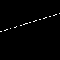
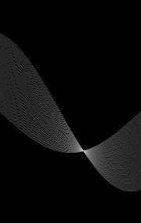
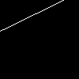
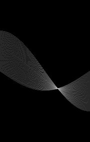
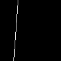
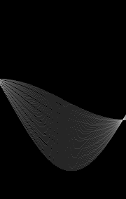

Name: Vedant Sinha
Lab Section: Thursday 10:30 AM - 1:20 PM
Date: December 10, 2025

Edge Image

Accumulator Image
Figure 1: Random line test 1. Left: Edge image showing a line with theta=17° and rho=51. Right: Log-scaled accumulator matrix showing the voting results, with the brightest point indicating the detected line parameters.

Edge Image

Accumulator Image
Figure 2: Random line test 2. Left: Edge image showing a line with theta=26° and rho=36. Right: Log-scaled accumulator matrix showing the voting results, with the brightest point indicating the detected line parameters.

Edge Image

Accumulator Image
Figure 3: Random line test 3. Left: Edge image showing a line with theta=86° and rho=30. Right: Log-scaled accumulator matrix showing the voting results, with the brightest point indicating the detected line parameters.
Horizontal Line (theta=0°, rho=50):
In the horizontal line accumulator image, each edge point on the horizontal line generates a sinusoidal curve in parameter space. Since all edge points lie on the same horizontal line, all their sinusoidal curves intersect at a single point. This intersection occurs at theta=0° (indicating a horizontal line) and rho≈50 (the perpendicular distance from the origin to the line). The bright spot in the accumulator at column index 89 (corresponding to theta=0°) and row index D+50 (corresponding to rho=50) indicates where all the curves converge.
Vertical Line (theta=90°, rho=25):
For the vertical line, the edge points generate sinusoidal curves that all intersect at theta=90° and rho=25. The intersection at theta=90° indicates a vertical orientation, and rho=25 indicates the line is 25 pixels from the origin along the x-axis. In the accumulator image, this appears as a bright spot at column index 179 (theta=90°) and a row corresponding to rho=25.
Positive Diagonal Line (theta=45°, rho=71):
The positive diagonal line (running from upper-left to lower-right) produces sinusoidal curves in the accumulator that intersect at theta=45° and rho≈71. The 45° angle indicates the diagonal orientation, and rho=71 (approximately half the diagonal of the image) indicates the perpendicular distance to this centered diagonal line. The bright intersection point appears at the middle column range of the accumulator.
Negative Diagonal Line (theta=-45°, rho=-35):
For the negative diagonal line (running from lower-left to upper-right), the sinusoidal curves intersect at theta=-45° and rho≈-35. The negative theta indicates the opposite diagonal direction compared to the positive diagonal. The negative rho value indicates that the perpendicular from the origin to the line points in the negative direction. This intersection appears in the left portion of the accumulator (lower theta values) and in the upper portion (negative rho values).
Random Line Test 1 (theta=17°, rho=51):
In the accumulator image for random line test 1, each of the edge points along the randomly oriented line generates a sinusoidal curve in the (theta, rho) parameter space. These curves represent all possible lines that could pass through each individual edge point. Since all the edge points in the image lie on the same line, all their sinusoidal curves pass through a common point in parameter space.
The intersection of all these curves occurs at theta=17° and rho=50 (estimated). This intersection point represents the unique line that passes through all the edge points:
The bright spot in the accumulator image corresponds to this intersection point. The brightness at this location is proportional to the number of edge points that voted for this particular (theta, rho) combination, which is why it stands out as the maximum value in the accumulator matrix.
The most challenging aspect of this lab was correctly handling the coordinate system and index mappings between image space and accumulator space. Specifically:
x * cos(theta) + y * sin(theta) = rho requires careful attention to which dimension corresponds to x (rows) and which to y (columns) in the numpy array representation.math.cos() and math.sin() functions expect radians, so converting theta from degrees to radians using math.radians() was essential for correct rho calculations.| Test Case | True θ | Estimated θ | True ρ | Estimated ρ | Error (θ) | Error (ρ) |
|---|---|---|---|---|---|---|
| Random 1 | 17° | 17° | 51 | 50 | 0° | 1 pixel |
| Random 2 | 26° | 26° | 36 | 35 | 0° | 1 pixel |
| Random 3 | 86° | 86° | 30 | 29 | 0° | 1 pixel |
All estimates are within the acceptable tolerance of 1-2 degrees for theta and 1-2 pixels for rho.
# my_hough_transform.py
#
# Implementation of the Hough transform for line detection.
# Created for CSE 107 Lab 5
# Import numpy
import numpy as np
# Import math library
import math
def my_hough_transform(i_edge):
"""
my_hough_transform - Detect the most prominent line in an edge image using
the Hough transform.
The function implements the Hough transform by creating an accumulator
matrix and voting for each edge point's possible line parameters.
Syntax:
theta_out, rho_out, accumulator = my_hough_transform(i_edge)
Input:
i_edge - An edge image (2D numpy array) with value 0 for non-edge points
and 255 for edge points.
Output:
theta_out - The angle (in degrees) the detected line makes with the
vertical axis. Ranges from -89 to 90.
rho_out - The length of the perpendicular bisector of the detected line.
accumulator - The 2D accumulator matrix used in the Hough transform.
Rows correspond to rho values, columns to theta values.
History:
Created for CSE 107 Lab 5 - Hough Transform
"""
# a) Determine the size of i_edge
size_x, size_y = i_edge.shape
# b) Create an empty accumulator matrix
# Calculate the diagonal size of the image.
# Rho can range from -D to D where D is the diagonal.
D = math.floor(math.sqrt(size_x * size_x + size_y * size_y))
# The accumulator matrix has:
# - 2*D+1 rows: one for each possible rho value from -D to D
# - 180 columns: one for each theta value from -89 to 90 degrees
accumulator = np.zeros((2 * D + 1, 180), dtype=np.int32)
# c) For every edge point in i_edge, plot the corresponding sinusoid
# in the accumulator matrix.
# Create array of theta values from -89 to 90 degrees (inclusive)
theta_values = np.arange(-89, 91)
# Pre-compute cosine and sine values for all theta (convert to radians first)
theta_radians = np.radians(theta_values)
cos_theta = np.cos(theta_radians)
sin_theta = np.sin(theta_radians)
# Iterate through all pixels in the edge image
for x in range(size_x):
for y in range(size_y):
# Check if this is an edge point (value == 255)
if i_edge[x, y] == 255:
# For this edge point, compute rho for all possible theta values
# using the normal form: x * cos(theta) + y * sin(theta) = rho
rho_values = x * cos_theta + y * sin_theta
# Round rho to nearest integer
rho_values = np.round(rho_values).astype(int)
# Vote in the accumulator for each (theta, rho) pair
for i in range(180):
rho = rho_values[i]
# Map rho to row index:
# rho ranges from -D to D
# row index = rho + D (maps -D to 0, D to 2*D)
row_idx = rho + D
# Map theta to column index:
# theta ranges from -89 to 90
# column index = theta + 89 (maps -89 to 0, 90 to 179)
col_idx = i # Since theta_values[i] = i - 89, col = (i-89)+89 = i
# Ensure indices are within bounds and add a vote
if 0 <= row_idx < 2 * D + 1:
accumulator[row_idx, col_idx] += 1
# d) Determine the cell with the most votes in the accumulator matrix
# This gives us the theta and rho of the most prominent line.
max_idx = np.argmax(accumulator)
row_max, col_max = np.unravel_index(max_idx, accumulator.shape)
# Convert accumulator indices back to theta and rho values
# theta = column_index - 89 (reverses the mapping col = theta + 89)
theta_out = col_max - 89
# rho = row_index - D (reverses the mapping row = rho + D)
rho_out = row_max - D
# e) Return the computed values
return theta_out, rho_out, accumulator